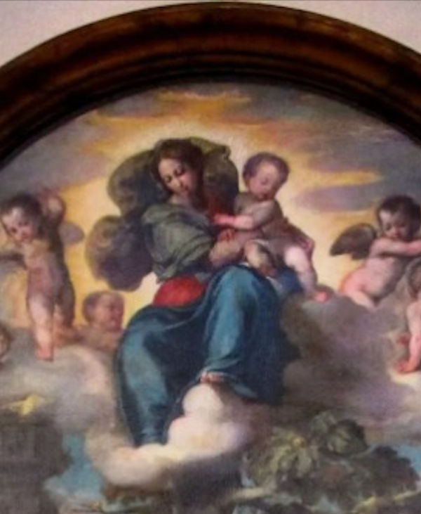

Sometimes, a large or famous painting stolen from a church might draw a lot of attention if sold via the regular art market. But how do art thieves avoid the heat? In 1982, thieves broke into a cathedral and cut away a small portion of this large-scale painting. After the theft, the cut-out canvas changed hands several times over 35 years before eventually ending up at an auction where careful eyes spotted it. What is the name of the auction house where this canvas extract was put up for auction?
